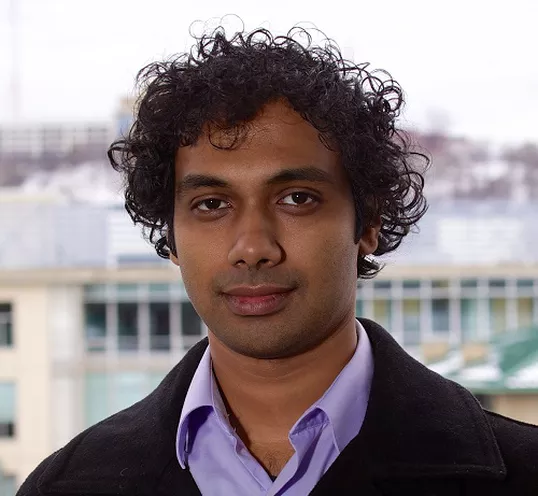
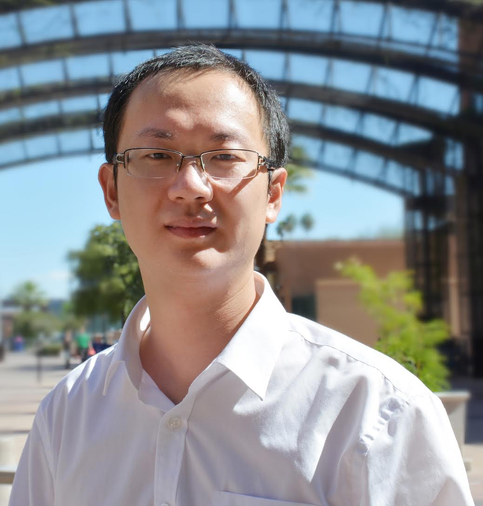

Invited Speakers and Talks
Debadeepta Dey, Principal Researcher, Microsoft Research

Title: Neural Architecture Search: Has the revolution happened yet?
Abstract: In this talk I will present an overview of recent developments in Neural Architecture Search (NAS) also known as AutoDNN, a sub-field of AutoML. We will walk through key developments in the past few years and the rapid progress the community has made in this area where equivalent or better results can now be achieved on a single gpu machine in a day as opposed to thousands of gpu hours less than three years ago. I will end with our particular method, Efficient Forward Architecture Search (EFAS) which is particularly amenable for lifelong learning and real-world production environments. EFAS works by iteratively adding connections to existing network layers.
Finally we will see the large number of existing open problems including reproducibility and suitable benchmarking, that the community needs to address to achieve truly general solutions. Along the way we will highlight research opportunities in both theory and empirics.
Bio: Dr. Debadeepta Dey is a principal researcher in the Adaptive Systems and Interaction (ASI) group led by Dr. Eric Horvitz at Microsoft Research, Redmond. He finished his PhD at the Robotics Institute, Carnegie Mellon University, Pittsburgh, USA, where he was advised by Prof. Drew Bagnell. He does fundamental as well as applied research in machine learning, control and computer vision with applications to autonomous agents in general and robotics in particular.
He is interested in bridging the gap between perception and planning for autonomous ground and aerial vehicles. His interests include decision-making under uncertainty, reinforcement learning, artificial intelligence and machine learning. His recent works include “Efficient Forward Architecture Search” which got accepted at NeurIPS 2019. He graduated in 2007 from Delhi College of Engineering with a Bachelor’s degree in Electrical Engineering. From 2007 to 2010 he was a researcher at the Field Robotics Center, Robotics Institute, Carnegie Mellon University.
Xia “Ben” Hu, Assistant Professor, Texas A&M University

Dr. Xia Hu is an Assistant Professor in Computer Science and Engineering at Texas A&M University starting from Fall 2015, and is also a member of the Center for Remote Health Technologies and Systems and the Center for the Study of Digital Libraries. He is currently directing the DATA (Data Analytics at Texas A&M) Lab. His research involves developing automated and interpretable data mining and machine learning algorithms with theoretical properties to better discover actionable patterns from large-scale, networked, dynamic and sparse data. His research is directly motivated by, and contributes to, applications in social informatics, health informatics and information security. His lab’s work has been featured in Various News Media, such as MIT Tech Review, ACM TechNews, New Scientist, Fast Company, Economic Times. His research is generously supported by federal agencies such as DARPA (XAI, D3M and NGS2) and NSF (CAREER, III, SaTC, CRII, S&AS), and industrial sponsors such as Adobe, Apple, Alibaba and JP Morgan. He has several notable works in Automated Machine Learning published at venues such as KDD and ICDM. His lab developed the popular open source library called AutoKeras for automated machine learning. AutoKeras has over 6000 stars and around 1000 forks on GitHub.
Walter J. Scheirer, Assistant Professor, University of Notre Dame
 Title: Representational Dissimilarity Analysis as a Tool for Neural Network Model Search
Abstract: Neuroscience theory posits that the brain’s visual system coarsely identifies broad object categories via neural activation patterns, with similar objects producing similar neural responses. Artificial neural networks also have internal activation behavior in response to stimuli. It can be hypothesized that networks exhibiting brain-like activation behavior will demonstrate brain-like characteristics, e.g., stronger generalization capabilities. This talk introduces a human-model similarity (HMS) metric, which quantifies the similarity of human fMRI and network activation behavior. To calculate HMS, representational dissimilarity matrices (RDMs) are created as abstractions of activation behavior, measured by the correlations of activations to stimulus pairs. HMS is then the correlation between the fMRI RDM and the neural network RDM across all stimulus pairs. The metric is tested on unsupervised predictive coding networks, which specifically model visual perception, and assessed for statistical significance over a large range of hyperparameters. The experiments show that networks with increased human-model similarity are correlated with better performance on two computer vision tasks: next frame prediction and object matching accuracy. Further, HMS identifies networks with high performance on both tasks. An unexpected secondary finding is that the metric can be employed during training as an early-stopping mechanism.
Bio: Dr. Walter J. Scheirer is an Assistant Professor in the Department of Computer Science and Engineering at University of Notre Dame. His research is primarily focused around the problem of recognition, including the representations and algorithms supporting solutions to it. He is particularly interested in features and learning-based methods that apply to both vision and language. Specifically, his research revolves around open set recognition, extreme value theory models for visual recognition, biologically-inspired learning algorithms, and stylometry. One of his notable works is the CVPR 2019 paper “A Neurobiological Evaluation Metric for Neural Network Model Search". The paper takes a neurobiological approach towards assessing the statistical significance of a large range of hyperparameters of a neural network based on an fMRI-based human-model similarity metric.
Title: Representational Dissimilarity Analysis as a Tool for Neural Network Model Search
Abstract: Neuroscience theory posits that the brain’s visual system coarsely identifies broad object categories via neural activation patterns, with similar objects producing similar neural responses. Artificial neural networks also have internal activation behavior in response to stimuli. It can be hypothesized that networks exhibiting brain-like activation behavior will demonstrate brain-like characteristics, e.g., stronger generalization capabilities. This talk introduces a human-model similarity (HMS) metric, which quantifies the similarity of human fMRI and network activation behavior. To calculate HMS, representational dissimilarity matrices (RDMs) are created as abstractions of activation behavior, measured by the correlations of activations to stimulus pairs. HMS is then the correlation between the fMRI RDM and the neural network RDM across all stimulus pairs. The metric is tested on unsupervised predictive coding networks, which specifically model visual perception, and assessed for statistical significance over a large range of hyperparameters. The experiments show that networks with increased human-model similarity are correlated with better performance on two computer vision tasks: next frame prediction and object matching accuracy. Further, HMS identifies networks with high performance on both tasks. An unexpected secondary finding is that the metric can be employed during training as an early-stopping mechanism.
Bio: Dr. Walter J. Scheirer is an Assistant Professor in the Department of Computer Science and Engineering at University of Notre Dame. His research is primarily focused around the problem of recognition, including the representations and algorithms supporting solutions to it. He is particularly interested in features and learning-based methods that apply to both vision and language. Specifically, his research revolves around open set recognition, extreme value theory models for visual recognition, biologically-inspired learning algorithms, and stylometry. One of his notable works is the CVPR 2019 paper “A Neurobiological Evaluation Metric for Neural Network Model Search". The paper takes a neurobiological approach towards assessing the statistical significance of a large range of hyperparameters of a neural network based on an fMRI-based human-model similarity metric.
Péter Vajda, Research Scientist, Facebook
 Title: Hardware-Aware Deep Neural Architecture Search
Abstract: A central problem in the deployment of deep neural networks is maximizing accuracy within the compute performance constraints of low power devices. In this talk, we will discuss approaches to addressing this challenge based automated network search and adaptation algorithms. These algorithms not only discover neural network models that surpass state-of-the-art accuracy, but are also able to adapt models to achieve efficient implementation on low power platforms for real-world applications.
Bio: Dr. Peter Vajda is a Research Scientist working on computer vision at Facebook since 2014. His recent work includes publications such as FBNet and ChamNet which are both focused on finding platform-aware efficient neural network architectures. Before joining Facebook, he was Visiting Assistant Professor in Professor Bernd Girod’s group in Stanford University, Stanford, USA. He was working on personalized multimedia system and mobile visual search. He received M.Sc. in Computer Science from the Vrije Universiteit, Amsterdam, Netherlands and a M.Sc. in Program Designer Mathematician from Eötvös Loránd University, Budapest, Hungary. He completed his Ph.D. with Prof. Touradj Ebrahimi at the Ecole Polytechnique Fédéral de Lausanne (EPFL), Lausanne, Switzerland, 2012.
Title: Hardware-Aware Deep Neural Architecture Search
Abstract: A central problem in the deployment of deep neural networks is maximizing accuracy within the compute performance constraints of low power devices. In this talk, we will discuss approaches to addressing this challenge based automated network search and adaptation algorithms. These algorithms not only discover neural network models that surpass state-of-the-art accuracy, but are also able to adapt models to achieve efficient implementation on low power platforms for real-world applications.
Bio: Dr. Peter Vajda is a Research Scientist working on computer vision at Facebook since 2014. His recent work includes publications such as FBNet and ChamNet which are both focused on finding platform-aware efficient neural network architectures. Before joining Facebook, he was Visiting Assistant Professor in Professor Bernd Girod’s group in Stanford University, Stanford, USA. He was working on personalized multimedia system and mobile visual search. He received M.Sc. in Computer Science from the Vrije Universiteit, Amsterdam, Netherlands and a M.Sc. in Program Designer Mathematician from Eötvös Loránd University, Budapest, Hungary. He completed his Ph.D. with Prof. Touradj Ebrahimi at the Ecole Polytechnique Fédéral de Lausanne (EPFL), Lausanne, Switzerland, 2012.
Dong Yang, Research Scientist, NVIDIA
 Title: Neural Architecture Search in Large-Scale 3D Medical Image Analysis
Abstract: Deep learning algorithms, in particular 2D and 3D fully convolutional networks (FCNs), have become the most popular methodology for volumetric medical image segmentation. In practice, 2D convolutions cannot fully leverage the spatial information, while 3D convolutions suffer from high GPU memory consumption. Moreover, it remains sophisticated and time-consuming to choose or design proper 3D networks given different tasks. In this talk, we introduce a novel approach to automatically search the network architecture tailoring to volumetric medical image segmentation. The entire searching strategy follows a coarse-to-fine fashion to automatically search a 3D segmentation network from scratch. Specifically, we divide the search procedure into two stages: 1) the coarse stage, where we search the macro-level topology of the network; 2) the fine stage, where we search at micro-level for operations in each cell between 2D, 3D or Pseudo-3D (P3D) convolutions at each layer. We evaluated our method on 10 public datasets from the Medical Segmentation Decathlon (MSD) challenge, which achieved state-of-the-art performance and proved the effectiveness and generalization of the search model.
Bio: Dr. Dong Yang is a research scientist at NVIDIA. He specializes in medical image processing and is currently working on deep learning methods to solve medical imaging problems, with the goal of improving the effectiveness of clinical workflows. His research interests also include machine learning and reinforcement learning. One of his current projects utilizes neural architecture search in 3D medical image processing (“V-NAS: Neural Architecture Search for Volumetric Medical Image Segmentation” in 3DV 2019 and “Searching Learning Strategy with Reinforcement Learning for 3D Medical Image Segmentation” in MICCAI 2019).
Title: Neural Architecture Search in Large-Scale 3D Medical Image Analysis
Abstract: Deep learning algorithms, in particular 2D and 3D fully convolutional networks (FCNs), have become the most popular methodology for volumetric medical image segmentation. In practice, 2D convolutions cannot fully leverage the spatial information, while 3D convolutions suffer from high GPU memory consumption. Moreover, it remains sophisticated and time-consuming to choose or design proper 3D networks given different tasks. In this talk, we introduce a novel approach to automatically search the network architecture tailoring to volumetric medical image segmentation. The entire searching strategy follows a coarse-to-fine fashion to automatically search a 3D segmentation network from scratch. Specifically, we divide the search procedure into two stages: 1) the coarse stage, where we search the macro-level topology of the network; 2) the fine stage, where we search at micro-level for operations in each cell between 2D, 3D or Pseudo-3D (P3D) convolutions at each layer. We evaluated our method on 10 public datasets from the Medical Segmentation Decathlon (MSD) challenge, which achieved state-of-the-art performance and proved the effectiveness and generalization of the search model.
Bio: Dr. Dong Yang is a research scientist at NVIDIA. He specializes in medical image processing and is currently working on deep learning methods to solve medical imaging problems, with the goal of improving the effectiveness of clinical workflows. His research interests also include machine learning and reinforcement learning. One of his current projects utilizes neural architecture search in 3D medical image processing (“V-NAS: Neural Architecture Search for Volumetric Medical Image Segmentation” in 3DV 2019 and “Searching Learning Strategy with Reinforcement Learning for 3D Medical Image Segmentation” in MICCAI 2019).
Barret Zoph, Senior Research Scientist, Google Brain
 Title: Neural Architecture Search and Beyond
Abstract: In recent years automatically designing neural network architectures has become an increasingly popular research topic. In this talk I will go over a variety of advancements in the field of Neural Architecture Search (NAS) covering NAS being applied to a wide variety of different data domains ranging from image classification and video prediction to using NAS for tabular data. The talk will also cover different algorithms used in NAS and how they have improved greatly over time by using both gradient based and evolutionary strategies. These algorithmic improvements have allowed the computation required for NAS to decrease by orders of magnitude. Additionally, I connect the work on NAS to newer work that automatically designs data augmentation policies (AutoAugment) for various domains such as image classification and object detection. Finally I go over some very recent algorithmic improvements that greatly speedup the AutoAugment algorithm.
Bio: Dr. Barret Zoph is a Senior Research Scientist at Google Brain. He has previously worked at Information Sciences Institute with professors Kevin Knight and Daniel Marcu on topics related to neural network machine translation. Dr. Zoph has authored several publications in the domain of Neural Architecture Search including the seminal papers, 'Neural Architecture Search with Reinforcement Learning' and 'Learning Transferable Architectures for Scalable Image Recognition', each having more than 1000 citations.
Title: Neural Architecture Search and Beyond
Abstract: In recent years automatically designing neural network architectures has become an increasingly popular research topic. In this talk I will go over a variety of advancements in the field of Neural Architecture Search (NAS) covering NAS being applied to a wide variety of different data domains ranging from image classification and video prediction to using NAS for tabular data. The talk will also cover different algorithms used in NAS and how they have improved greatly over time by using both gradient based and evolutionary strategies. These algorithmic improvements have allowed the computation required for NAS to decrease by orders of magnitude. Additionally, I connect the work on NAS to newer work that automatically designs data augmentation policies (AutoAugment) for various domains such as image classification and object detection. Finally I go over some very recent algorithmic improvements that greatly speedup the AutoAugment algorithm.
Bio: Dr. Barret Zoph is a Senior Research Scientist at Google Brain. He has previously worked at Information Sciences Institute with professors Kevin Knight and Daniel Marcu on topics related to neural network machine translation. Dr. Zoph has authored several publications in the domain of Neural Architecture Search including the seminal papers, 'Neural Architecture Search with Reinforcement Learning' and 'Learning Transferable Architectures for Scalable Image Recognition', each having more than 1000 citations.